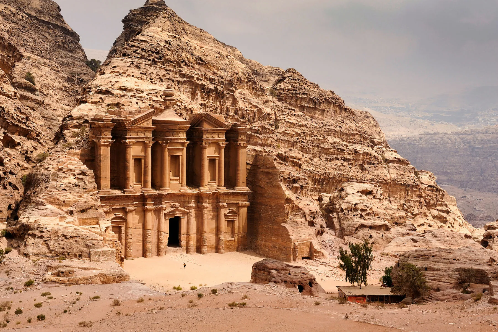

Petra
|  |
Petra es un famoso sitio arqueológico situado en Jordania, conocido por su impresionante arquitectura esculpida directamente en las paredes de roca de color rosa del desierto. Fundada en el siglo VI a.C. como la capital del reino nabateo, Petra se convirtió en un importante cruce de caminos para las rutas comerciales que conectaban Arabia, Egipto y Siria-Fenicia, facilitando el comercio de especias, seda, y otros valiosos bienes. El acceso principal a la ciudad se realiza a través del Siq, un estrecho desfiladero que conduce directamente al Tesoro (Al-Khazneh), uno de los monumentos más emblemáticos de Petra. La ciudad es famosa por sus sofisticados sistemas de agua, además de las tumbas, templos y teatros tallados en la roca, que demuestran la avanzada ingeniería y arte de los nabateos. Petra fue declarada Patrimonio de la Humanidad por la UNESCO en 1985 y es una de las Nuevas Siete Maravillas del Mundo, atrayendo a visitantes de todo el globo por su rica historia y su espectacular belleza natural. |
| Pais |
Jordania |
| Region |
valle de Araba |
| Fundacion |
Siglo VIII a.C. |
| Inscripcion |
1985 |
| Region |
Estados Arabes |
| Descubrimiento |
1812 |